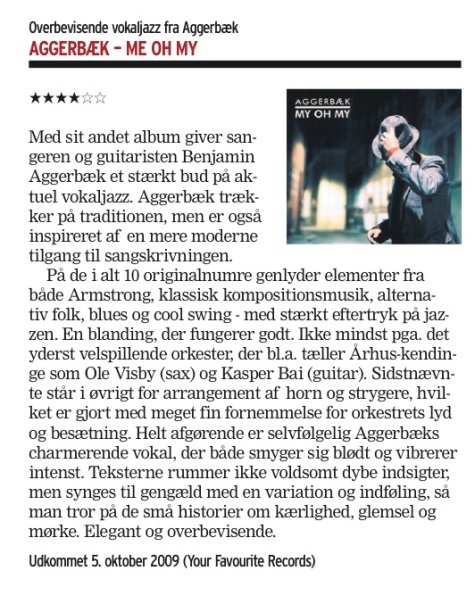

Press
Dansk pressemeddelelse
Aggerbaek Quintet press release in English
Jazz Special - Nr. 112 (Dec. 2009)
Henrik Wolsgaard-Iversen:
“Konceptet spænder over mange vinkler, farver, fra det enkle
folk/blue til det mere svulmende med fuld bemanding og
ekstra strygere. Men det er sangeren og hans melodier –
det er Aggerbæks alle sammen – som fascinerer så dybt...
Læg mærke til Aggerbæk, Kraglund og også Kasper Bai,
der har arrangeret så flot”
Information. - 22-12-2009
Peter H. Larsen:
"Man kan ikke præsentere spøjst pastichefyldte sange
med så megen træt indolens, som Benjamin Aggerbæk gør
det på My Oh My, uden at han selv og lytterne også har det sjovt.
Eller uden at afsløre et meget stort vokalt talent".
Politiken. - 03-12-2009
Anmeldt af Henrik Palle:
"Egne sange, som [Aggerbæk] fremfører med stor
føling og i meget afvekslende og flotte arrangementer
af Kasper Bai, der spiller guitar i Aggerbæks orkester og viser
sig at spænde musikalsk vidt med både gypsyinspiration og renlivet
rockende indsatser. Aggerbæks vokal besidder en stor inderlighed,
og stemmen spiller fint op til den meget billeddannende musikalske
baggrund, der giver sangene et stort og helstøbt udtryk ...
Charmerende og absolut indtagende".
Aggerbæk: My oh my (Your Favourite jazz)
Århus Stifttidende 10-11-2009
Anmeldt af Thomas Bjørnsteen
”Helt afgørende er Aggerbæks charmerende vokal, der både smyger sig blødt og vibrerer intenst... man tror på de små historier om kærlighed, glemsel og mørke. Elegant og overbevisende.”
JazzNyt af Niels Overgård - 28-12-2009
Jazznyt.blogspot.com
Det sker alt for sjældent at danske sangere laver original ny jazzmusik. Men det er ikke kun fordi at Aggerbæk er en sjælden fisk, at han har lavet en af årets bedste plader. Der hersker en umiddelbar lethed over musikken, der sammen med den følsomme originalitet og gode stemme bør være med til at give Benjamin Aggerbæk
et gennembrud.
www.jazznyt.blogspot.com 17/10/09 |